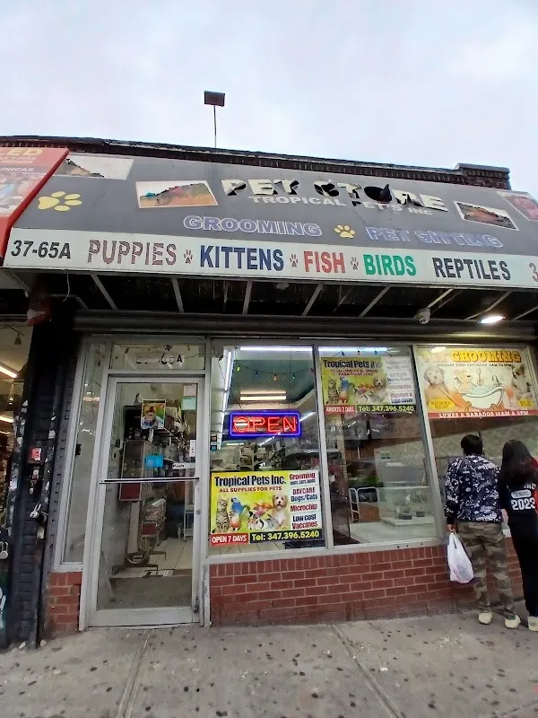
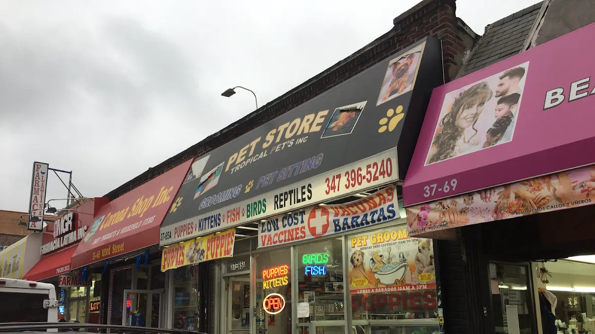

Tropical Pets.
The cupboard.
A pet store in Queens. Explore sample accessories for daily care and ask the store about its actual selection.
Enter the collection →37-65 103rd St, Corona, NY 11368
A shelf for the routine
Look by the kind of accessory you need. Confirm the use and suitability of every product with the store.
Around mealtimeView the feeding sample and ask about the available sizes and materials.
Explore feeding →Demo selection. Confirm products, prices and availability with the store.
Daily objects, examined
These illustrated product studies leave room for manufacturer details, measurements and the shop’s actual photography.



The shop in Queens
Tropical Pets Inc. is at 37-65 103rd St, Corona, NY 11368. Explore the business photographs, then plan a visit or call to ask about the current selection.
Plan your visit →